|

| Andrew
Probert:
duas
Enterprises
e
um
DeLorean
Por Salvador
Nogueira 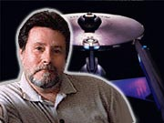 |
|

Galeria:
"Conheça mais do trabalho de Andy Probert"
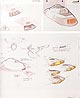
Conceitos da ponte (Jornada I)
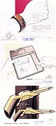
Equipamentos
de Jornada I
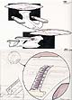
Projetos para a
Enterprise-D
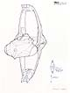
Idéia inicial para a nave Romulana
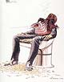
Criação para "Conspiracy"
|
Trek
Brasilis - Muitas pessoas que vieram a trabalhar em Jornada
as Estrelas eram fãs de longa data da Série Clássica.
Você é uma delas?
Andrew Probert - Com certeza. Eu adorei Jornada desde o início porque era uma série inteligente e que não subestimava os espectadores. TB - Como foi seu primeiro envolvimento com a série, durante a produção de "Jornada nas Estrelas - O Filme"? Probert - Eu tinha feito amizade com o designer e ilustrador de Guerra nas Estrelas Ralph McQuarrie, e ele estava trabalhando no "filme para tevê" de Jornada quando George Lucas o chamou para trabalhar em Guerra nas Estrelas II. Àquela altura, ele tinha acabado de começar a trabalhar em "Jornada nas Estrelas - O Filme" e sugeriu que eu me oferecesse para substituí-lo como designer e ilustrador. Isso foi no estúdio de efeitos especiais Robert Abel. Mostrei a eles meu trabalho, eles gostaram e eu entrei. TB - Você é conhecido como o criador da versão atualizada da Enterprise para o primeiro filme da série clássica. Você chegou a trocar idéias com Matt Jefferies (o criador da Enterprise original) antes de preparar seus primeiros desenhos? 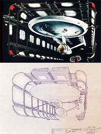 Probert - Não, nunca tive o privilégio de conhecer o legendário Matt Jefferies. Sendo um fã da série, porém, eu estava bastante familiarizado com sua filosofia de design quando cancelaram o filme de Jornada para tevê para produzirem o longa-metragem para cinema. Joe Jennings (Diretor de Arte) já tinha montado uma versão deles para a Enterprise atualizada, e eles já tinham até informalmente montado uma maquete. Nós, da equipe de Jornada, o Filme, assumimos o desafio de fornecer um visual que fosse além da concepção televisiva. Quer dizer, a imagem iria ser TÃO maior que precisávamos de um visual à altura, e foi aí que eu entrei. Meu diretor de arte e efeitos, Richard Taylor, me passou a tarefa de projetar todos os equipamentos, inclusive a Enterprise. Sua única exigência foi a de nos atermos às proporções do projeto de Jennings. Ele também influenciou bastante no projeto do novo motor de dobra da nave. Mas, fora isso, a nave foi totalmente uma concepção minha. Permanecemos fiéis a essa concepção, mas acabamos mudando a maior parte dos detalhes --quase todos os motores, tubos de torpedos fotônicos, o topo e a base do disco.TB - E como o aumento do orçamento, além do fato de vocês terem uma tela muito maior para preencher, afetaram o trabalho? Probert - Bem, uma tela maior significava que precisávamos de uma maquete maior. Eu nunca cheguei a vê-la, mas pelo que sei, a outra maquete [feita para a série "Fase II" de Star Trek, que nunca saiu do papel] tinha entre 90cm e 1.20m de comprimento, provavelmente uns 90cm. A Enterprise que nós construímos para Jornada nas Estrelas - O Filme tinha aproximadamente 1.80m de comprimento. TB - Dizem que a Enterprise que você projetou podia ser separada em duas seções, como a Enterprise-D, da Nova Geração. Dizem também que você sugeriu como usar esse recurso da nave no final do filme. O que há de verdade nisso? Probert - Bem, sabendo que a Enterprise sempre havia sido projetada em duas partes, o casco primário e o secundário, eu quis levar essa idéia até o fim --pelo menos no meu projeto. As pessoas devem se lembrar de um episódio da série clássica chamado "The Apple" ("A Maçã"), em que há um deus-máquina num planeta atacando a Enterprise, e Kirk está no planeta, mas ordena a Scotty, que está no comando da nave, a fazer o que for necessário para salvar a nave. Ele diz, "Separe o casco principal, se for preciso, mas salve a nave" --o casco principal sendo, é claro, o disco. Então, quando fiz a Enterprise para "Jornada nas Estrelas - O Filme", criei uma linha de separação específica no dorso, bem abaixo do disco, indicada por duas linhas vernelhas. Além disso, criei espaço para quatro pernas de pouso sob o disco. Enquanto o filmavam as cenas, o roteiro do filme ia mudando
quase que diariamente. Então, descobri que não havia ainda um
final definitivo para o filme, e isso me inspirou a escrever
algumas páginas de roteiro, sugerindo um diálogo em que Kirk
realmente dá a ordem de separação do disco. A Frota Estelar
chama a Enterprise de volta para ser inspecionada após o
incidente V'ger, e Kirk, ainda não satisfeito com a viagem na
nova Enterprise, planeja mandar a nave de volta ao estaleiro,
mas, com o pretexto de testar a separação da nave, manda o
casco com a engenharia de volta e sai voando com o disco. Essa
era a minha versão. 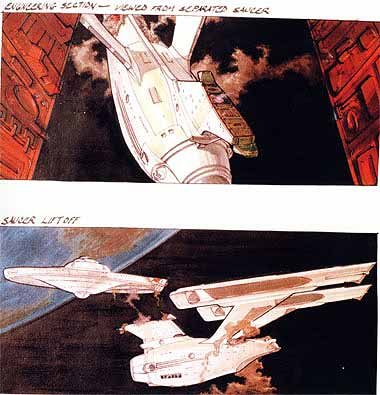 TB - E por que sua idéia não chegou à tela? Probert - Porque outra maquete teria que ser construída. Pelo menos uma maquete do disco. Eles poderiam ter ocultado o disco e mostrado apenas o casco da engenharia no estaleiro, mas iriam precisar de outra versão do disco para colocá-la no mecanismo de movimento controlado. Eles não quiseram gastar dinheiro com isso. O problema foi só esse, porque eles também tiveram a idéia de mostrar a separação no filme, quando V'ger se transforma numa forma de vida, depois de se fundir com Decker e Ilya, e solta todos aqueles cristais de memória que havia armazenado --todas as coisas que havia juntado, inclusive aqueles cruzadores de batalha Klingons que aparecem no começo do filme. E dois cristais colidem com os cruzadores e eles descobrem que estão a um quilômetro da Enterprise. Então, disparam contra a nave para danificá-la, a fim de saírem do espaço terrestre. Fazendo isso, destroem o casco da engenharia, então Kirk precisa separar o disco para ir atrás dos Klingons. O problema estava no disco, a maquete voadora que travaria combate com os Klingons. Então, de qualquer forma, o disco, claro, ia ter que ser construído separadamente. TB - A Paramount está trabalhando numa nova versão desse filme para DVD. Dentre as novidades, teremos uma nova edição feita por Robert Wise e novos efeitos especiais feitos pela Foundation Imaging. Você acredita que o filme realmente vá ganhar alguma coisa com essas mudanças? Você acha que Jornada nas Estrelas - O Filme precisava de reparos? Probert - Sim, definitivamente sim. O filme ficou muito lento em certos momentos, houve muitas eventualidades por causa da constante indecisão dos escritores e executivos. Bob Wise costumava fazer filmes de qualidade. Tenho certeza que esse filme de Star Trek não é um de seus projetos preferidos. Então acho que esta é a oportunidade para ele fazer melhor, do jeito que ele queria. TB - Você estava ciente deste projeto do DVD, ou foi consultado antes que o assunto vazasse para a imprensa? Probert - Não, de forma nenhuma. Mais tarde, recebi um e-mail de um dos membros da equipe elogiando o trabalho que eu havia feito, pois eles tiveram que pesquisar tudo o que havia sido feito. E não consigo evitar de me perguntar por que, se gostaram tanto do meu trabalho, não me chamaram de volta para concluí-lo. TB - Tendo trabalhado nesse filme, você deve ter também alguma percepção dos problemas de produção que envolvem efeitos especiais. O que você poderia dizer sobre esses problemas? Probert - Bem, você está me pedindo para voltar vinte anos no tempo, mas o maior problema que me vem à mente foi uma complicação com a Paramount. Harold Michelson, o diretor de arte do filme [ele aparece como Designer de Produção nos créditos] é um excelente diretor de arte e designer, mas não entende nada de ficção científica. Eu estava trabalhando no estúdio Robert Abel and Associates, e eles estavam cientes das necessidades da ficção científica (duas pessoas de lá haviam trabalhado em "2001 - Uma Odisséia no Espaço" e eu, àquela altura, já tinha trabalhado em "Battlestar Gallactica", e vários de nós éramos conhecedores de ficção cientítica). Quando tentamos fazer propostas à Paramount que teriam aprimorado a fantasia de Jornada, fomos recebidos com muita resistência pelo pessoal de lá. Isso porque eles não entendiam. 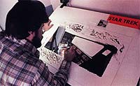 Por exemplo, o deck de carga da Enterprise --onde Kirk embarca pela primeira vez na nave. Ali era óbvio que deveriam ser usadas pinturas. Antes da pintura em si, existem o que chamamos de renderizações da pintura. São desenhos, às vezes pinturas, que mostram como será a aparência da pintura. Eu estava trabalhando com um outro ilustrador, que estava fazendo sua própria versão daquele espaço, e ele fez uma janela enorme --estou falando de uma janela de quatro decks de altura --dentro do espaço para deslocamento de carga. Tentei entender qual era a lógica daquilo, e a lógica era, "bem, precisamos ver o que se passa fora daquela área, olhar para fora daquele compartimento, ver o que está lá fora". Ele abriu uma janela e aumentou o desenho. Ora, esse é o típico pensamento hollywoodiano. Jamais você teria uma parede de vidro transparente de quatro decks de altura num compartimento de carga, isso é absurdo! Então, a agenda e as necessidades do pessoal de produção, em sua maior parte, são bem diferentes das de alguém envolvido no setor da indústria. Este foi o único problema real que tivemos. As maquetes foram montadas muito bem. Realmente, não me lembro de mais nada.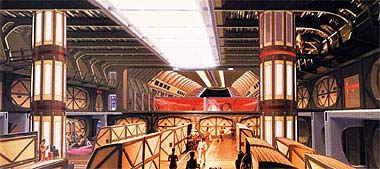 TB - Depois do trabalho em Jornada, o Filme, como você se envolveu com a Nova Geração? Probert - Gene Roddenberry anunciou que queria tentar de novo. Fiquei sabendo desse anúncio, me empolguei e liguei para o escritório dele. Ele se lembrou de mim do tempo de Jornada, o Filme --veja bem, isso foi 10 anos depois, mas ele se lembrou de mim --e me pediu para eu lhe levar meu portfolio, para ver o que eu tinha feito durante aqueles 10 anos. Então, fui até lá e mostrei a ele meu trabalho. Os outros produtores também estavam lá, o Bob Justman e o outro produtor. Todos analisaram meu trabalho e, cerca de uma semana depois, tivemos uma reunião e eles me chamaram para trabalhar. No fim, acabei sendo a décima primeira pessoa contratada para a série. Eles me quiseram a bordo tão cedo porque precisavam que eu desenhasse esboços da ponte de comando. A preocupação deles era porque, como a ponte seria o cenário principal, eles queriam ter certeza de que estariam satisfeitos com ela, e queriam ter tempo de sobra para fazer mudanças, caso fosse necessário. Então, comecei a desenvolver a concepção da ponte, mas, como você pode imaginar, eu também estava muito interessado em como seria a nova Enterprise, pois essa série de Jornada, de acordo com nossos planos, se passaria 85 anos depois de Jornada, o Filme. Então comecei, só por diversão, a desenhar esboços da Enterprise, ao mesmo tempo em que desenvolvia a ponte. Pendurei um desses desenhos na parede, só para mim. David Gerrold, que também estava no projeto, viu esse desenho na parede e disse, "Essa é a nova Enterprise?" Eu disse, "Não sei, eu apenas gostaria que ela fosse assim". Ele pediu o desenho emprestado, tirou-o da parede e saiu da sala. Cerca de meia hora depois voltou, pôs o desenho na minha mesa e disse, "Essa é a nova Enterprise". Perguntei o que ele queria dizer com aquilo e ele disse que tinha levado o desenho a uma reunião, mostrado aos produtores e perguntado, "O que acham disso?". E todos gostaram. Então, isto se tornou uma espécie de recorde. Um recorde por eles terem concordado tão rápido com uma idéia da equipe. 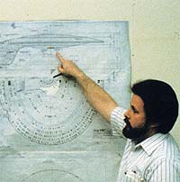 Houve várias mudanças depois daquela reunião, mas aquele desenho mostrava muito da direção que eu queria tomar. Depois disso, Gene gostou de tudo o que eu mostrei para ele, e quando apresentei o projeto final da Enterprise, achei que a ponta deveria ser no centro do disco, pois esta seria a parte mais protegida e seria o centro de comando, então deveria ser de fácil acesso a partir de qualquer ponto do disco. E os motores, embora fossem bem maiores do que os da a Enterprise original, pois a nova nave teria 600m de comprimento, ainda pareciam pequenos quando comparados proporcionalmente à Enterprise 1701-D. Então, as únicas duas mudanças de Gene no meu projeto final foram a ponte, que eu desloquei de volta para o topo do disco, pois Gene achava que o lugar dela era lá, mas também porque sua forma e tamanho permitiam às pessoas, por comparação, ter a noção do tamanho da nave.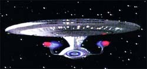 E ele me pediu para alongar um pouco os motores, pois achou que, embora os motores fossem maiores, eles ainda pareciam pequenos em relação à nave. Foi só isso. Todo o resto, no que se refere ao projeto da nave, correu na mais perfeita calma.TB - Você tocou num ponto interessante quando disse que tiveram de atualizar a Enterprise 85 anos no futuro. Agora, a nova série de Jornada vai se passar 100 anos antes da série original. Do ponto de vista de um designer, quão difícil é projetar uma nave e uma tecnologia que precedem a Série Clássica? Probert - Bem, quando a Série Clássica surgiu, muita gente deve se lembrar de quão revolucionário era aquele desenho. Era tão diferente de tudo o que havíamos visto antes, tão emocionante. Mas projetar algo para trás daquilo... já houve tentativas de se imaginar como eram as naves antes da Enterprise do Kirk. Acho que se chegou a cogitar que a Enterprise era mais como uma roda com um nariz comprido, apontando para fora do eixo central. Há pelo menos um quadro disso, uma referência documentada de que o desenho da Enterprise era outro. E, claro, eles mostraram como era a nave com motor de dobra de Cochrane. Então, qualquer um pode adivinhar que as coisas deveriam caminhar por aí, mas Rick Berman é o responsável pela série e vai manipulá-la de acordo com a vontade dele. TB - Você está insinuando que Rick Berman não dá muita liberdade aos projetistas, em termos de criação? Probert - Sim. TB - Você teve problemas com Rick Berman durante a primeira temporada da Nova Geração? Probert - Sim. TB - Poderia dar mais detalhes? Probert - Gene Roddenberry era inicialmente o responsável pela Nova Geração, como deveria ser, e isso deve ter mudado por razões políticas. Não tenho a menor idéia do que teria causado essa mudança. Mas enquanto Gene era o responsável, ele e eu nos dávamos muito bem. Nós nos entendíamos, e eu gostava dele pelo fato de ter criado Jornada nas Estrelas e por ele saber exatamente aonde queria levar a série. Mesmo assim, ele estava sempre aberto às novas idéias que levávamos até ele, e discutia essas idéias de forma inteligente. Quando Rick Berman assumiu a série, no meio da primeira temporada, toda vez que mostrávamos a ele um conceito de design, sua resposta era sempre, "não, não podemos fazer isso, pois me faz lembrar de alguma coisa que eu já vi em algum lugar", ou "parece um barbeador", ou então "parece uma coisa que vi numa loja de móveis". A única coisa digna de nota que Rick Berman havia feito antes de Jornada nas Estrelas era um programa chamado "The Big Blue Marble", para crianças. Por alguma razão, a Paramount o chamou. Não sei. Ouvi histórias contraditórias de que Gene achava que Berman fosse um grande produtor e quis trazê-lo. De qualquer forma, Rick Berman não entendia e, pelo que vejo nas produções atuais, continua não entendendo nada de ficção científica. Vi ótimas projetos, de Doug Drexler e alguns outros ilustradores que estão trabalhando com ele. E, a propósito, todos projetos a favor de conceitos muito mais controlados. Minha experiência com Rick Berman é a seguinte: ele não entende o que faz, não entende de ficção científica. TB - Você acredita que a condução de Jornada nas Estrelas feita por Rick Berman não foi capaz de seguir o padrão da série clássica e do começo Nova Geração? Probert - Não. Acho que Jornada morreu quando Gene morreu. Como eu já disse, Gene sabia o que queria para a série, e seu foco principal era a manutenção de sua coerência e consistência. Todo mundo que se preocupava com Jornada acabou saindo. Bill Theiss, o figurinista, saiu. Bob Justman saiu. Então... Não sei o que dizer, era muito frustrante trabalhar naquilo. TB - Você acredita que Rick Berman se preocupa com Jornada? Probert - Acho que ele se preocupa com a série pelo dinheiro. Acho que ele se preocupa porque acredita que, não interessa o que eles produzam, se tiver o nome "Star Trek", as pessoas vão ver. As pessoas vão reclamar, mas a série vai continuar dando dinheiro. Mas essa é apenas a minha opinião. TB - Voltando às suas criações durante a primeira temporada da Nova Geração, temos várias naves, como o cruzador Ferengi e a nave de guerra Romulana. Você tem uma preferida? Probert - Teve uma nave, que você poderia chamar de "alienígena", no episódio "Haven". Acho que aquela é a de que mais gosto. Minha nave favorita ainda é a Enterprise, embora muitos gostem mais da nave Romulana. E uma surpreendente maioria gosta mais da Enterprise dos filmes do que de todas as outras naves. Minha nave favorita é a Enterprise em si, mas além dela gosto da nave em "Haven", por dois motivos. Primeiro, foi uma nave que fiz junto com Gene. Eu estava preso a um conceito de nave e queria fazer algo diferente. Todas as naves que tínhamos visto até então tipicamente tinham sua fonte de energia na parte de trás, em motores que empurravam a nave. Eu estava trabalhando num projeto em que o motor seria na frente, de alguma forma manipulando e puxando a nave. Fui até Gene e lhe disse que estava com essa espécie de bloqueio criativo e eu realmente queria fazer algo diferente. Disse a ele que estava pensando em colocar o motor na frente. E Gene disse: "Ponha o motor no meio". E eu perguntei, "Como assim?" "Bem, simplesmente ponha sua fonte de energia no meio. Essa nave é construída em volta do motor, que a leva para qualquer direção". E aí eu fiz aquele projeto. A fonte de energia é aquela coisa grande --claro que você não precisa, necessariamente, explicar totalmente como funciona --e eu peguei emprestado de Herman Zimmerman, o designer de produção, aquela parte traseira, que era basicamente em formato triangular, e a dupliquei na frente da nave. Não sei, fiquei muito feliz com aquele formato, o conceito, e a nave me traz boas lembranças do tempo em que trabalhei com Gene. TB - Sobre a nave de guerra, você se inspirou nas naves Romulanas da série original, ou começou do zero? Probert - A nave de guerra Romulana da série original tinha o formato de um pássaro. E eu quis manter isso de alguma forma. Então comecei com formas de pássaro e de asas. Finalmente, cheguei a um desenho semelhante ao mostrado na tela. Mas minha idéia era ter um motor acima e outro abaixo, porque achei que uma nave alienígena com design vertical em frente à Enterprise, que tem uma configuração horizontal, daria um belo contraste. Agora, Gene tinha decidido que não haveria naves com três motores, nem naves com um motor só. Quando eu estava desenhando a nova Enterprise, ele disse, "Os motores das naves da Federação são sempre co-dependentes". É o mesmo que dizer que eles sempre funcionavam em pares. Então, foi por isso que Sternbach e eu fizemos a Stargazer daquele jeito, com dois conjuntos de pares. 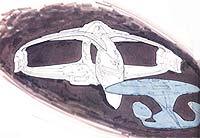 Então comecei a pensar que, na Segunda Guerra Mundial, todos os países que tinham aeronaves faziam a mesma coisa: decolavam, voavam, pousavam, manobravam. Geralmente, tinham um motor só, duas asas, dois estabilizadores --então, todos tinham os mesmos componentes, mas com aparência diferente. Havia uma propensão nacional por determinado desenho, mas, tecnicamente, todos os aviões faziam as mesmas coisas. Então, minha idéia em Jornada foi --já que a Enterprise utilizada dois motores --que os dois motores tinham que se alcançar, a fim de funcionarem em co-dependência. Em outras palavras, não haveria obstruções entre os motores para interromper os campos de energia e as forças de conexão entre eles. E, bem, todas as naves alienígenas poderiam parecer diferentes, mas todas operavam dentro do mesmo princípio. Então, é por isso que a nave Ferengi Marauder é curva, côncava, pois isso permite que um motor alcance o outro. O mesmo acontece com a nave de guerra Romulana, em que os motores podem se ver através da nave. A nave é construída acima e abaixo do campo de energia daqueles motores. Mas minha concepção original era a de que haveria muito mais nave, muito mais estrutura comprimida entre as duas asas. As duas seções das asas são grandes, obviamente grandes o suficiente para conterem pessoas e carga. Mas na minha concepção original elas seriam bem maiores.TB - Você teve ambas as experiências de criar e atualizar a Enterprise. Qual você acha mais difícil? Probert - Atualizar. Minha formação acadêmica é em desenho industrial. Aprendemos a gerar novas idéias, novos conceitos, e não pegar uma coisa que já existe e apenas atualizá-la. E Gene sempre manteve que a Enterprise era uma personagem da série, então deveria ter sempre, basicamente, a mesma aparência. Então, da mesma forma que um modelo T4 e uma Ferrari nova em folha têm os mesmos componentes, mas aparências totalmente diferentes, a mesma coisa eu fiz com a Enterprise. Mantive os mesmos componentes --o disco, o caso da engenharia, os pilares sustentando as duas naceles --e isso manteve a idéia de Gene de preservar sempre a mesma nave, visualmente. TB - Você acredita que esse conceito de criação de naves está agora pervertido em Jornada? Porque existem diferentes naves com três, quatro naceles... 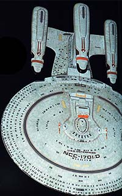 Probert - Sim. E é uma coisa ruim porque deturpa a consistência que Gene tentava manter. Eu diria que a maioria dos conceitos que Gene ditou foram propositadamente abandonados quando Gene morreu. E isso vale para a Enterprise com três motores [vista em "All Good Things..."]. A idéia de colocar aquele canhão imenso sob o disco vai totalmente contra a concepção de Gene sobre o que a Enterprise representava. Sim, a Enterprise realmente carrega muitas armas, mas colocar naquele canhão, como numa nave de batalha ou de guerra...TB - Com a tecnologia CGI [sigla em inglês para Imagem Gerada por Computador], você pode fazer tudo que quiser, mesmo que a maquete possa ser construída e colocada em equilíbrio ou não. Você acredita que isso de alguma forma afasta os projetistas da sensação realista de projetar naves, do fato de estarem construindo algo que deveria ser uma nave de verdade? Probert - Isso é bem possível. Na verdade, nunca pensei nisso porque, por conta da minha formação em desenho industrial, tudo o que desenho é como se fosse para um projeto real. Quando eles vieram com a idéia (de novo, isto é Hollywood, Gene não pousaria uma nave) de pousar a Voyager num planeta, tão sem equilíbrio, com aquelas varetinhas pequenininhas sustentando aquela curvatura incrivelmente grande, aquilo foi ridículo. TB - Você acha que a CGI tem participação nesse efeito? Porque, se eles constroem uma maquete, a colocam numa superfície e descobrem que ela não fica de pé, eles vão se dar conta de que aquela não é uma boa idéia. Probert - Bem, é assim que deveria ser, mas os produtores não seguem essa lógica. Mas não acho que a CGI seja o problema. Acho que as pessoas não entendem de projetos de equipamentos nem da lógica da ficção científica. CGI é apenas uma maneira de visualização. Acho que imagens geradas por computador não são capazes ainda de substituir maquetes. Talvez um dia sejam, mas hoje essas imagens são "perfeitas demais" e, portanto, carecem de qualidade. TB - Quando projeta uma nave, você geralmente dá mais atenção a seus aspectos ténicos ou à sua aparência? Probert - A primeira coisa que eu gosto de resolver é o formato, que deve ser agradável. Depois, analiso a nave com um olho técnico para determinar a praticidade daquele formato inicial, e verificar se há pequenas falhas técnicas. Então eu mudo o formato para acomodar esses requisitos técnicos. Mas sempre tento manter um visual agradável. TB - E existem casos em que os aspectos técnicos simplesmente inviabilizam a concepção original? Ou há sempre uma maneira de acomodar as coisas? Probert - Bem, para mim sempre há uma maneira de acomodar as coisas. Porque não podemos perder de vista que estamos projetando uma nave espacial de ficção científica, a representação de um veículo do futuro, e deve-se supor, sempre, que avanços tecnológicos terão ocorrido, permitindo que certas tecnologias funcionem. Se alguém tivesse tido a idéia de fazer um avião de aço que voasse, lá atrás, quando os irmãos Wright voaram pela primeira vez, todos pensariam nisso como uma cena de ficção científica, especialmente um avião do tamanho de um 747 ou de um Concorde. Eles nem conseguiriam imaginar algo como aquilo decolando, pois seus pequenos motores nunca teriam a força para levantar um 747. Então, há vezes em que a tecnologia prática, ou a tecnologia baseada no entendimento atual de fontes de energia precisa ser substituída. Desde que a idéia esteja baseada na lógica, lógica consistente, ela funciona. TB - Depois da primeira temporada da Nova Geração, você saiu da Paramount e foi para a Disney. Que trabalhos você fez para a Disney? Você ficou feliz com essa decisão? Probert - Na época eu fiquei feliz, pois estava cansado da política de Hollywood e já fazia bastante sucesso com meus projetos de equipamentos e vários objetos para filmes. Então, eu queria experimentar a minha mão desenhando coisas para o mundo real. Não estou falando de torradeiras ou liqüidificadores, mas o mundo real do entretenimento, com as dimensões da Disney. Walt Disney sempre foi um herói para mim, e toda vez que eu visitava a Disneylândia ficava fascinado com os processos por trás do desenho daquelas atrações. Dois colegas de classe, que cursaram a faculdade comigo, estavam na Disney. E quando eu saí da Paramount, liguei para um deles e perguntei se havia vagas para "imagineers" [uma junção das palavras "imagination" e "engineer"] na Disney. "Imagineers", claro, são os "engenheiros da imaginação", os projetistas das atrações dos parques. E meu colega me incentivou a ir até lá com meu portfólio. Trabalhar lá foi uma boa experiência. Não foi ótima, porque havia a frustração de eu não ter nenhuma credibilidade. E me pareceu que, depois de ter trabalhado dez anos em Hollywood, sendo reconhecido no mundo todo, eu não precisaria começar do nada como "imagineer". Claro, eles tinham várias pessoas brilhantes trabalhando lá, criando aquelas atrações. E eles olhavam para mim como que dizendo, "você não criou nenhuma atração" e, portanto, eu precisei abrir meu caminho como se fosse uma criança recém-saída da escola. Então, houve essa frustração da minha parte. Mas, no geral, a atmosfera era muito criativa e todo mundo lá é um ótimo artista. Não há pessoas medíocres trabalhando lá, todos eles têm grande talento. Então, estar naquela atmosfera foi estimulante. TB - De qual projeto específico você mais gostou enquanto esteve na Disney? Probert - Eu fiquei lá só quatro anos. A Disney estava contratando muitas pessoas para trabalharem em grandes projetos. Conforme os projetos começavam a ficar prontos, eles iam deixando as pessoas pelo caminho. Trabalhei muito na Euro Disney World e nos projetos da Discovery Land. Trabalhei também no parque aquático que a Disney propôs para a cidade de Long Beach, que fica perto de Los Angeles. Houve também algumas atualizações na Tomorrow Land, no parque da Disneylândia. TB - A Euro Disney não fez tanto sucesso quanto a Disney World, nos Estados Unidos. Por que você acha que isso aconteceu? Probert - Eu adoraria entender por que aquele parque não fez tanto sucesso. Eu acreditava que fosse fazer. Foi o parque mais planejado que a Disney já fez. Todas as possibilidades foram consideradas na construção daquele parque. Todas as lições aprendidas nos outros parques foram colocadas em prática na Euro Disney. Por exemplo, a rua principal sempre ficava lotada com desfiles. A Euro Disney tem um caminho paralelo atrás das lojas, para que você possa sair pelo outro lado da loja e evitar a multidão. Fiquei surpreso ao saber que o parque não estava indo bem. Acho que houve algum misterioso mal-entendido, por parte dos europeus, quanto à concepção e finalidade daquele parque de diversões. TB - Fale um pouco sobre o que você está fazendo agora. Há algum projeto em andamento? 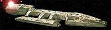 Probert - No momento, estou em contato com os produtores da nova "Battlestar Gallactica". Houve um anúncio de que estavam trazendo essa série de volta. Então, estou em contato com os produtores e diretores da série para saber da possibilidade de eu ir trabalhar com eles, atualizando o visual.TB - Mas ainda não há nenhum acordo, há? Probert - Não há nenhum acordo ainda. A última notícia que tive foi a de que eles estavam em conversações com redes de TV para vender a série e que voltariam a entrar em contato comigo. É só o que sei. TB - Existe alguma coisa que você criou, para Jornada nas Estrelas ou para qualquer outro projeto, que você aperfeiçoaria se tivesse a oportunidade? Probert - Muito boa pergunta... Se eu pudesse melhorar alguma coisa, o que eu faria? (Alguns segundos de silêncio) Não consigo pensar em nada. Provavelmente aquela nave de guerra Romulana, eu gostaria de melhorar as proporções, mas os fãs gostam do jeito que está, então não vou discutir. TB - Você participa de convenções de Jornada? Probert - Eu ia sempre a convenções. Eu tinha um show de slides de duas horas. Mas agora não vou a convenções como projetista de Jornada porque não quero que as pessoas pensem que estou tentando chamar atenção. É que eu não quero que as pessoas olhem para mim e pensem, "Nossa, já faz dez anos que ele saiu da Nova Geração e ainda participa de convenções". Infelizmente, não estou estou envolvido em nenhum projeto que seja tão criativo. 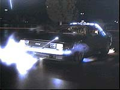 Se me selecionarem para a nova "Gallactica", aí eu adoraria ir às convenções para falar sobre esta série, pois seria um projeto atual, e isso seria ótimo. Eu ainda recebo convites para participar de convenções, mas imponho uma condição: vou como um projetista que por acaso trabalhou em "Star Trek", "Battlestar Gallactica", "De Volta para o Futuro" e outros projetos.TB - Ah, você trabalhou em "De Volta para o Futuro"? Probert - Sim. TB - É certamente um ótimo filme. O que você projetou para ele? Probert - Fiz o desenho final do carro, o logotipo, a capa dos quadrinhos. E fiz várias storyboards... TB - Você acredita haver esperança para um "De Volta para o Futuro 4"? Probert - Não sei. Fiquei impressionado por ter havido o 2 e o 3. E todos foram tão bons. Geralmente, uma seqüência não é tão boa quanto o original, mas os três filmes "De Volta para o Futuro" são muito bons. TB - Você conhece o Brasil? Probert - Sim, conheço. Fui a Brasília e fiquei muito impressionado. E minha tia acaba de visitar o Brasil, mas não lembro qual cidade. Era uma cidade pequena... Mas além disso, sei muito pouco sobre seu país. É um país que eu gostaria de visitar algum dia. TB - Talvez você pudesse vir para falar sobre "Battlestar Gallactica". Probert - (Rindo) Sim, eu adoraria ter essa oportunidade. TB - Muito obrigado pela entrevista. Probert - Eu é que agradeço. Foi um prazer conversar com você. Acesse o site de Andrew Probert no seguinte endereço: 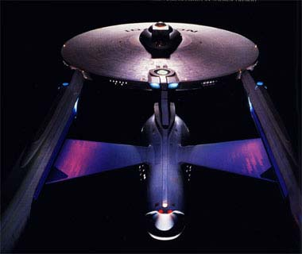
|